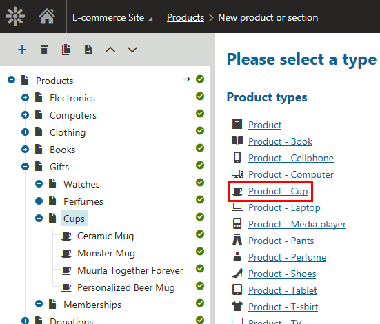
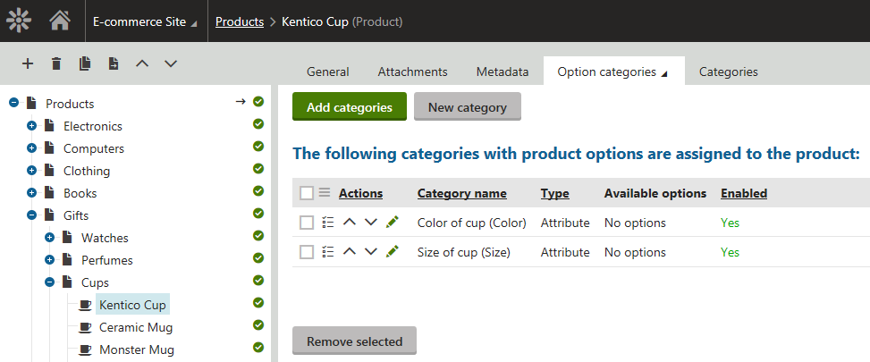
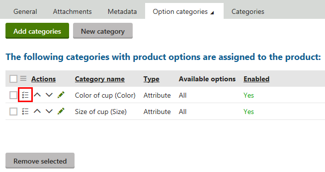
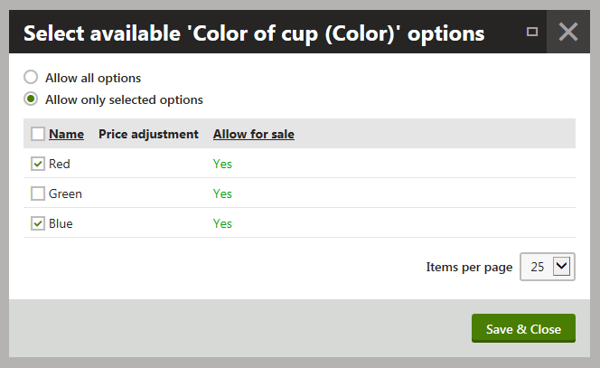
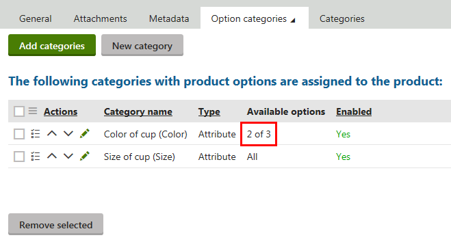
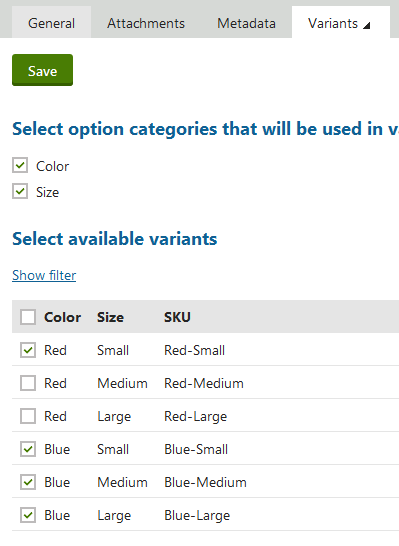
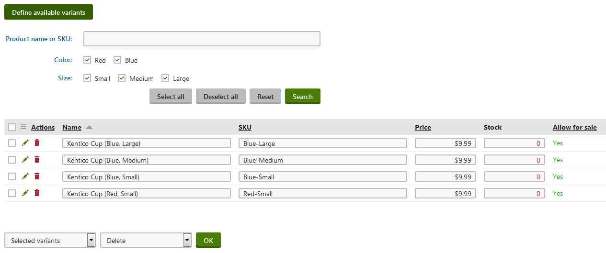
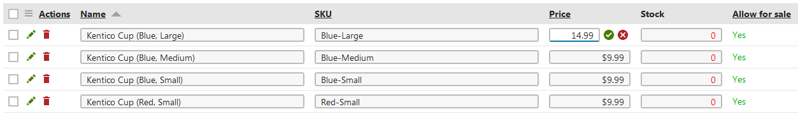
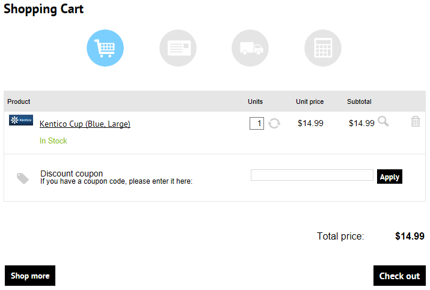

Example - Adding a product with variants
The example demonstrates how you can add a product with variants to a Kentico site. The product is based on the Product - Cup product type, and has six product options in two Attribute option categories. Only five of these options are available for the product. The product has four variants. Two variants have their prices different from the price of the product.
The example uses the sample E-commerce Site.
Adding a new product
First, you need to add a new product of the required type and representation to a selected part of your on-line store.
Open the Products application.
Select Gifts -> Cups in the product sections tree and click New (
 ).
).The system opens a dialog allowing you to specify the required type of your new product.
Click Product - Cup in the Product types column.

Selecting a product typeThe system opens a page where you can specify product properties.
Alternatively, you can select some other product type, e.g. Product.
If the system doesn't offer any product type (for example, if you deleted the default product types), create a new product type as described in Configuring product page types.
Enter the following values for the product's properties:
Product name: Kentico Cup
Price: 9.99
Department: Gifts
Image: upload an image file
Representing: Standard product
Allow for sale: Yes (selected)
Track inventory: By variants
Click Save.
The system adds the product to the selected part of your on-line store. Now you can add product option categories to the product.
Adding product option categories to the product
Add to the product two product option categories of the Attribute type.
Switch to the product's Options -> Option categories tab and click New category.
Alternatively, you can add to the product existing categories by clicking Add categories.
Enter the following values for the category's properties:
Option category name: Color of cup
The system uses this name in your on-line store administration interface.
Display name: Color
The system uses this name on the live site.
Enabled: Yes (selected)
Type: Attribute
Click Save.
Enter the following values for the category's properties in the Options section:
User control type: Radio buttons in vertical layout
Click Save and close the dialog.
Click New category (on the Options -> Option categories tab).
Enter the following values for the category's properties:
Option category name: Size of cup
Display name: Size
Enabled: Yes (selected)
Type: Attribute
Click Save.
User control type: Radio buttons in horizontal layout
Click Save and close the dialog.
The system adds to the product two empty product option categories. Now you can add product options to the categories.

Available product option categories
Adding product options to the categories
Add three product options to the Color of cup category, representing the red, green and blue color of the cup.
Edit (
 ) the Color of cup category and switch to the Options tab.
) the Color of cup category and switch to the Options tab.Click New option.
Enter the following values for the first option's properties:
Option name: Red
Allow for sale: Yes (selected)
Click Save and create another.
Enter the following values for the second option's properties:
Option name: Green
Allow for sale: Yes (selected)
Click Save and create another.
Enter the following values for the third option's properties:
Option name: Blue
Allow for sale: Yes (selected)
Click Save and close the dialog.
Add three product options to the Size of cup category, representing the small, medium-sized and large cup.
Edit (
) the Size of cup category and switch to the Options tab.Click New option.
Enter the following values for the first option's properties:
Option name: Small
Allow for sale: Yes (selected)
Click Save and create another.
Enter the following values for the second option's properties:
Option name: Medium
Allow for sale: Yes (selected)
Click Save and create another.
Enter the following values for the third option's properties:
Option name: Large
Allow for sale: Yes (selected)
Click Save and close the dialog.
The system adds to each option category three product options. Now you can specify which of these options the system is to offer to your store administrators while defining product variants.
Selecting available options
Selecting available options while defining product variants is optional.
If you allow all options, you can later allow only selected variants made from these options (when defined).
Currently, all the six options are available for the product. However, you want your customers to be able to buy the Kentico Cup in blue or red color only. This means that you need to disallow the Green option.
Click Select available options ( ) for the Color of cup (Color) option category.

Launching the Select available options action for the Color of cup (Color) option categoryThe system opens the Select available 'Color of cup (Color)' options dialog. Here you can specify which options from this option category are available to your on-line store users.
Select Allow only selected options.
Enable the Red and Blue options.

Selecting available optionsClick Save & Close.
The system indicates that only two options from the Color of cup (Color) option category are available to your on-line store users. Now you can add variants to the product using the available options.

Available options
Adding the variants
Switch to the product's Option categories -> Variants tab.
Click Define available variants.
Select the following option categories:
Color
Size
The system offers combinations of available options from the two option categories as variants of the product.
Select the following variants:
Red-Small
Blue-Small
Blue-Medium
Blue-Large

Click Save.
On the product's Option categories -> Variants tab, you can see that the product has four available variants.

Available variants
On creating the variants, the system automatically assigned each variant its name and SKU (product number). The system also set the price of each variant according to the price of the product.
Now you can modify the variants' properties.
Configuring the variants
Configuring the variants is optional.
Configure the variants if you want to change the variants' properties, for example the price.
Set the value of the Price property of the Kentico Cup (Blue, Large) variant to 14.99.

Changing the price of the variantClick
 .
.Set the value of the Price property of the Kentico Cup (Blue, Medium) variant to 11.99.
Click
.For each variant, specify also the Stock property: 10.
If your customers purchase the large or medium-sized Kentico Cup, they will be charged accordingly.
Reviewing the product on the live site
Open the live site.
Select Gifts -> Cups in your on-line store main menu.
The system displays a list of all cups that you offer in your on-line store.
Click Kentico Cup to view the product's details page.
The system offers the cup in red and blue color in three different sizes. The unavailable combinations of product options are greyed.

Viewing the product details page
Select the large cup in blue color.
Click Add to cart.
The system adds the product (product variant) to the shopping cart.

Viewing the shopping cart content